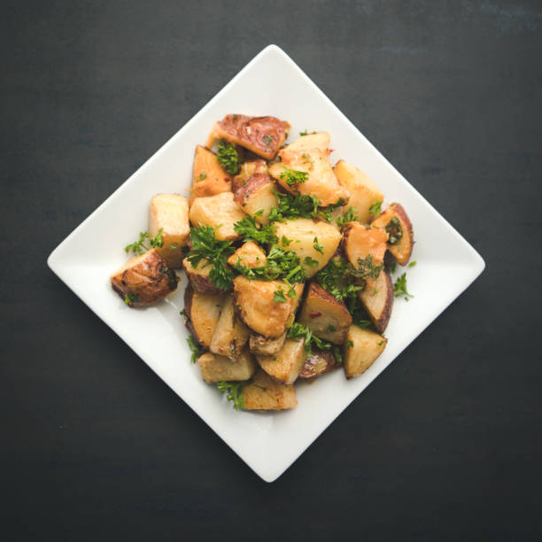
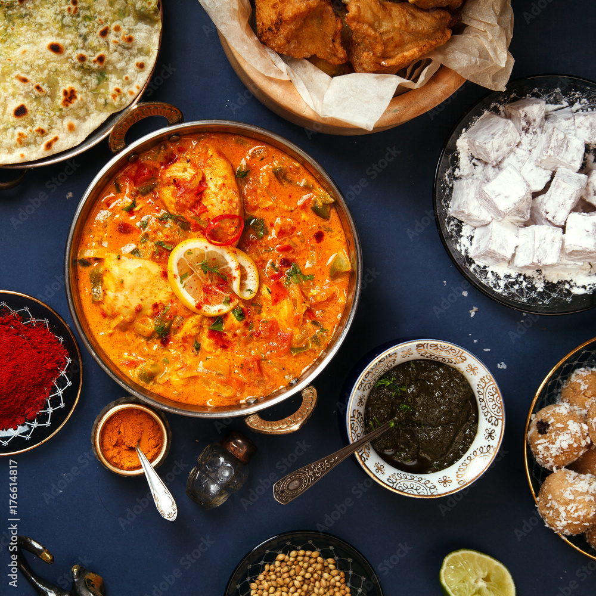

Biryani
A South Asian dish made with rice, spices, and meat (usually chicken or lamb), often served with raita (a yogurt-based sauce) and/or achar (pickle).

Enchiladas
Tortillas filled with shredded chicken, cheese, and a flavorful sauce, typically baked and topped with more sauce and cheese.

Miso Soup
A Japanese soup made with miso paste, tofu, seaweed, and sometimes other ingredients like mushrooms or vegetables.
Cajun Jambalaya
A Louisiana Creole dish made with rice, meat (such as chicken, sausage, or shrimp), vegetables, and flavorful spices and seasonings.